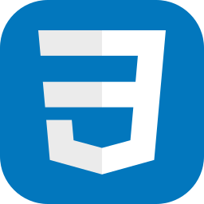
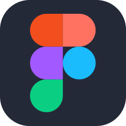
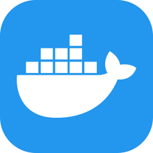
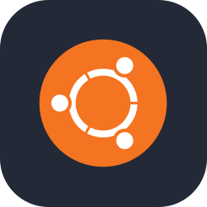

Olá, eu sou a Júlia!
Estudante de Desenvolvimento de Software Multiplataforma na Fatec
> escrevendo código, aprendendo coisas novas e acumulando abas abertas no navegador
> escrevendo código, aprendendo coisas novas e acumulando abas abertas no navegador
Movida pela curiosidade, vejo cada projeto como uma oportunidade de aprendizado. Tenho grande interesse por tecnologia e pelo processo de transformar problemas em soluções através do código. Entre estudos, projetos e novas descobertas, sigo construindo minha trajetória na área de desenvolvimento de software, sempre buscando evoluir minhas habilidades e acompanhar as constantes mudanças do mundo da tecnologia.
Busco minha primeira oportunidade na área de desenvolvimento, com interesse em desenvolvimento web full stack e em aprofundar backend com Node.js e bancos de dados relacionais. Quero participar de projetos onde eu possa aprender com pessoas mais experientes e contribuir de verdade com código.

CSS3
Figma
Docker
UbuntuPróximo nível em carregamento...
Plataforma web desenvolvida pela equipe TechFellas na Fatec Jacareí, com a missão de facilitar o aprendizado de metodologias ágeis. O portal oferece atividades interativas para testar e validar o conhecimento em Scrum, emitindo certificado ao final dos módulos.
O Projeto Integrador do 2º semestre está sendo realizado agora, ao longo do 2º semestre de 2026. Nome, descrição, tecnologias e repositório serão publicados aqui assim que o projeto for concluído.
Repositório em breve...
Projeto web de autenticação utilizando Node.js, da disciplina de Desenvolvimento Web, com o objetivo de aprender a utilizar a biblioteca Express para criação de servidores e definição de rotas.
Atividade prática de desenvolvimento web com o objetivo de construir uma página com HTML dinâmico e requisições HTTP para consulta de CEPs.
Em busca da primeira oportunidade — este espaço fica reservado para ela.
Repositório criado para praticar o fluxo de trabalho do GitHub.
Tecnólogo em Desenvolvimento de Software Multiplataforma — Fatec Jacareí "Professor Francisco de Moura", 2026 – 2028, cursando.
Registros anteriores: Ensino Médio Integral (completo) — Escola Nelson do Nascimento Monteiro, 2023 – 2025.
Estou aberta a oportunidades, projetos e networking.